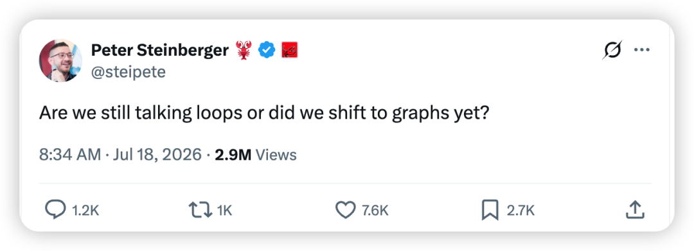
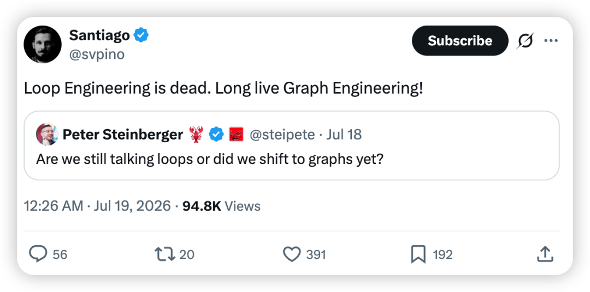

大家好，我是小林。
还记得吗？上个月才刚出 loop engineering 这个新词，我当时还写了一篇「图解 loop engineering」的文章。
结果 AI 进步速度超乎想象，我又看到了新词，叫「graph engineering」。
事情的起因是，前几天 OpenClaw 小龙虾创始人说了一句「我们还在聊 loop，还是已经切到 graph 了？」

然后就有其他大佬直接跟帖喊了一句「loop engineering 已死，graph engineering 永生！」

要知道，上次喊 loop engineering 的也是小龙虾创始人。
我算了一下，两次相隔才 40 天，又搞出新东西了，不愧是万词王。
此时此刻，我的心情如下，真累了，快追不动了，别造新词了好嘛。

所以我悟了，在 AI 圈，只要学得足够慢，就可以不用学了。
话虽如此，graph engineering 到底是啥牛鬼蛇神，今天还是来聊一聊。
────什么是 Graph Engineering？────
先说清楚一个词。graph 直译过来是「图」，是数据结构里「节点加连线」的那个图，节点叫 Node，节点之间的那根连线叫边（Edge），下面我统一写 graph。
graph engineering 是在干嘛呢？你想想自己公司是怎么运转的，就好理解了。
一家公司不会让一个人从头到尾包办调研、开发、测试、上线，哪怕这个人是全才也不行。公司的做法是拆分职责，每个人负责一个环节。有些环节必须等上一步完成后才能开始，有些环节则可以同时推进。哪个环节出了问题，也能很快定位到对应的负责人。
复杂任务也是一样。它通常包含多个步骤，有的存在先后依赖，有的互不影响，可以并行执行。
graph engineering 干的就是这件事。它按照任务之间的依赖关系，用 graph 来编排整个流程，该串行的串行，该并行的并行，每一块交给一个职责明确的节点去完成。
说白了，它不是发明了什么新玩法。它是提醒你，别再把一件本来可以并行、分支执行的任务，强行改成全程串行执行。

讲到这，有的同学就会问了，那 loop 被淘汰了？
别慌，恰恰相反。你可以把一个 loop 理解成一张最小的 graph，只有一个节点（Node），一条边（Edge），而且这条边指回自己。graph 上每个 agent 节点的内部，跑的还是那个熟悉的思考循环。
所以这俩根本不冲突。loop engineering 解决的是单个 agent 如何反复思考、调用工具和修正结果，graph engineering 解决的是多个执行单元如何拆分、并行、汇合和返工。简单说，前者管节点内部，后者管节点之间。

可能又有的同学就问了，任务之间的依赖关系我懂了，可我就在一个对话里，让同一个 agent 一步一步做，不也能做完吗？
能是能，但如果只是让一个 agent 在一段长对话里从头跑到尾，把一件本来可以并行、分支执行的任务改成全程串行执行，就会撞上几个躲不掉的麻烦。平时做点小任务没事，任务一放大，马上全冒出来。
先说最直接的，慢。全程串行执行，就只能一步一步来，明明后端、前端、测试能三路一起跑，也得排着队一个干完再干下一个。
再一个，如果没有额外设计状态和存档机制，这种串行流程跑下来，全部家当就只剩一长串聊天记录。执行到第 40 步突然中断怎么办？要么从头重跑，要么你自己钻进上下文里一点点翻，看看还能抢救出什么。
暂停也麻烦。这种从头跑到尾的执行方式，如果没有额外保存进度，中间很难停下来等人工审批，隔天再从断点接着干。要么一直耗着，要么中断后重新来。
最要命的是，单个 agent 串行执行很难表达复杂分工。
你想要「一个负责规划的，带三个干活的，再来一个专门挑刺的」，这个念头一冒出来，串行流程就开始吃力了。它擅长回答「下一步做什么」，却不擅长同时表达「谁来做、哪几个人一起做、做完在哪里汇合」。

我看到一个说法特别贴切，这么跑任务，就像系统有很强的执行能力，却没有统一调度，每次只能处理一件事，完成后才能进入下一件。
说白了，它缺的不是脑子，而是任务调度和流程管理能力，把任务分给多个 agent 同时执行、记录每一步的进度、执行中断后还能恢复。
这两年模型完成单个步骤已经越来越可靠，真正容易翻车的，是「一百个步骤怎么协作起来」，而 graph engineering 补上的，就是这层任务调度和流程管理能力。
────Graph Engineering 的工作原理是什么？────
其实，一张 graph 拆开就三样东西，节点（Node）、边（Edge）、状态（State）。
graph 工程的工作原理全藏在这三样里，我们一个个说。

第一样，节点（Node），就是干活的那个。
一个节点可以是一个跑着完整思考循环的 agent，也可以是一段按照固定规则运行的普通代码，或者一次数据库查询。甚至，人也行。对，人也是节点，审批这个环节就是一个人类节点：前面的任务流进来，你做出决定，后面的任务再继续往下走。
好节点的标准特别朴素，它只干一件事，单独就能测，哪天想换掉它，别的节点也不受牵连。一个节点要是身兼五职，那它就不是节点了，它就是又一个大 loop。

第二样，边（Edge），负责决定下一步执行哪个节点。
设计一条边（Edge），其实是在回答两个问题：下一个节点由什么决定，以及是否要根据结果选择不同分支。
先看由什么决定下一个节点。
可以由提前写进代码的固定规则决定，这叫确定性边（Deterministic Edge），比如测试全部通过就进入部署，根本用不着模型掺和。
也可以交给模型判断，这叫模型决策边（Model-decided Edge），比如一个工单进来，该派给处理退款的节点还是处理投诉的节点。
设计的功夫就在分清哪条边（Edge）该写死、哪条该交给模型。能写死的尽量写死，把模型的判断能力留给少数确实需要理解语义的分支。
再看流程是不是固定的。固定流程总是进入同一个节点，条件边（Conditional Edge）则会根据上一步的结果分叉，比如测试通过就进入下一个节点，测试失败就返回返工节点。
所以，条件边和前面两种不是并列关系。一条条件边既可以由代码判断，也可以由模型判断。比如「测试通过就审批，失败就返工」，是一条由代码判断的条件边；「根据工单内容分到退款或投诉节点」，则是一条由模型判断的条件边。

第三样，状态（State），一个字段结构固定的对象。
任务按照 graph 定义的顺序依次经过各个节点，执行到哪、每一步产出了什么、消耗了多少 token，这些信息总得有个地方存着。这个地方就是状态。你可以把它理解成一张字段固定的任务进度表，也可以把它理解成一份结构化的 JSON：
谁要看进度，读这个对象就行，不用再钻进一大段聊天记录里翻。

工程实现时，通常会在一个节点执行完成后，把最新状态保存下来，相当于存一次档。
当然，用 graph 来编排任务，并不会自动存档。还得靠运行框架，或者你自己把状态写进数据库、文件这些地方。
有了存档，流程中断就完全不是一回事了。以前中断叫「这一趟白跑了」，现在中断叫「读档，重试那一个节点」。打游戏你就懂，没有存档点的游戏，死一次回出生点，谁受得了。

说到底就是，节点（Node）负责干活，边（Edge）负责决定下一个执行哪个节点，状态（State）负责记录整个流程的进度和结果，每个节点完成后再把它保存下来。
三样凑齐，前面说的那些问题也就分别有了解法。
对了，图的状态还是个结构化的对象，每个节点的产出、测试结果、消耗的 token 都是一个个明确的字段。正因为它结构化、程序能直接读，前面说的存档和返工才转得起来。条件判断读取测试结果字段后，就知道该继续执行还是返回返工节点。

────Graph Engineering 怎么上手实操？────
真的需要用 graph 来编排吗？
动手之前先泼一盆冷水，你手上大部分的任务，按照顺序执行就够了，犯不着专门用 graph 来编排整个流程。
写个脚本、修个 bug、做个简单调研，这些任务的前后步骤很明确，按照顺序执行就行，强行用 graph 来编排纯属给自己找罪受。一个人一下午能干完的任务，没必要开项目启动会。
什么样的任务适合用 graph 来编排？我总结下来是这么几个。
一条都不符合，继续采用串行流程就行。符合两三条，再往下看。
对了，还有个前提。先确保每个节点都能稳定完成一件事，再谈怎么把多个节点编排到一起，顺序不能反。

怎样用 graph 编排一个开发需求？
好，假设你的任务符合其中两三条。拿个开发场景走一遍你就明白了。
你接了个需求，给系统加一个数据导出功能。后端要写导出接口，前端要加导出按钮和进度条，测试要补对应的用例。只要先约定好同一份 API 契约，三块任务就可以各自开工，最后再合到一起验收。
要是采用串行方式处理，就得先写后端，再写前端，再补测试。中间哪一步引入的问题，都会继续影响后面的环节，越到后面越乱。
改用 graph 来编排，思路完全不一样。
第一个节点是规划节点，把需求拆成后端、前端、测试三份任务，同时确定一份三方共用的 API 契约，再一起写进状态对象。这一步用模型，因为拆任务和制定契约都需要判断。
然后进入并行分支，三个开发节点同时启动，各自在独立的 git worktree 里干活，互相不碰对方的文件。每个节点内部就是一个标准的编码 loop，领任务、写代码、自测、提交。
三个分支完成后，汇合到集成节点，合并三个分支，跑全量测试。
接下来是条件边（Conditional Edge），也是我觉得整个设计里最妙的地方。测试全部通过，继续往下执行。测试失败，就看是哪个模块的用例没有通过，把状态对象里对应的任务标记成返工，再交回那个开发节点重做。
注意，只有出问题的那一路需要返工，另外两路不需要重跑，直接保留已有结果，因为每个节点完成后都保存过状态。
测试全部通过之后，流程停在最后一个节点上，等待人工确认。这个节点不执行自动化任务，而是暂停流程，等待你本人确认。
你看一眼 diff，点个头，graph 才走完最后一条边（Edge），合入主干。

整个过程里，状态对象会持续记录三份任务、每一路的进度和产物路径、测试结果，以及消耗了多少 token。任何时刻你想知道进展，看状态对象就行，不用翻任何聊天记录。

用 LangGraph 怎么写？
用 LangGraph 实现前面的开发流程，最重要的不是记住每个 API，而是看懂节点之间怎么连接。
下面这段代码省略了每个节点内部的具体实现，只保留整张 graph 的骨架。
先看第一行，StateGraph(DevState) 创建了一张 graph，DevState 就是前面讲过的状态对象。每个节点都可以读取它，也可以把自己的执行结果写回去。
接下来的 add_node 是把规划、后端、前端、测试、集成、返工和人工确认注册成节点。节点内部可以是一段普通代码，也可以是一个完整的 agent。
从 START 进入规划节点后，流程会同时启动后端、前端和测试三个节点。add_edge(["backend", "frontend", "tests"], "integrate") 表示必须等三个节点都完成，才能进入集成节点。
集成完成后，add_conditional_edges 会读取测试结果。测试通过就进入人工确认节点，测试失败就进入返工节点。返工完成后重新回到集成节点，再跑一次测试。
最后的 compile() 会把前面注册的节点和边组装成一张可以执行的 graph。
这样一来，代码和前面的开发流程就能一一对应。规划、并行开发、汇合集成、失败返工和人工确认，在代码里都能直接找到。
用 Claude Code 怎么玩？
看到这估计有同学就问了，我平时用的是 Claude Code，不想专门学 LangGraph，能不能实操 graph engineering？
能。Claude Code 已经提供了 subagent、hook 和 workflow 这些组件，可以直接用它们实现 graph 编排。
一次 subagent 执行可以充当一个节点。在 .claude/agents/ 目录下，一个 md 文件定义一个专职 agent，各自写清楚职责、能用哪些工具、用哪个模型。干活的给写权限，审查的只给只读。
hook 可以在特定时机强制执行固定检查。比如你可以配置一个 hook，在 agent 结束任务前自动运行测试，测试没有通过就继续修改。
那 graph 本身呢？新版 Claude Code 内置了 workflow 编排能力。这里的 workflow，可以理解成一段负责拆任务、派 agent、等结果和处理分支的调度脚本。你把目标说清楚，它自己会写出这段脚本，再照着脚本派出一队 subagent 去执行。

也就是说，脚本不用你动手，你要做的就是在对话框里把目标讲清楚，比如这样一句话。
用 workflow 帮我开发一个记账网站，拆成后端接口、前端页面、测试用例三块并行开发，做完合并跑全量测试，测试全部通过后叫我确认
我拿这句话实际跑了一遍。它接到后没有闷头就干，先把打算怎么拆讲清楚，还主动写了一份 API 契约，让三路 agent 都按同一份契约来开发，省得合并的时候各说各话。

接着它把整个 workflow 的编排方案展示出来等我确认。整个流程分成两个阶段，第一阶段由三个 agent 并行开发，第二阶段负责集成和测试。

我确认方案后，workflow 就在后台运行起来了。

执行过程中，随时可以输 /workflows 看后台的任务进度，三路 agent 各自跑到哪一步、消耗了多少 token，一目了然。

跑完之后，它跟我说 42 个测试用例全部通过，喊我来验收。我让它把项目跑起来，看看实际效果。

效果是这样的，整体确实不错，能直接用起来，页面也设计得挺像样。

最后我回复它「没问题」，这一轮协作就算交付完成了。注意这最后一步，就是前面说的人类节点。我确认之后，流程才通过最后一条边（Edge），把代码合入主干。

除此之外，Claude Code 内置的 /deep-research 命令，本身就是一个已经投入实际使用的 graph 工作流。它会拆解问题、并行搜索、抓原文、交叉验证，最后合成一份带引用的报告。
比如你想追一追最近模型圈的动态，可以这么问。
/deep-research 最近一个月国内和海外大模型的重要动态，国内重点看 DeepSeek、通义千问、Kimi 这些，海外重点看 OpenAI、Anthropic、Google，按重要程度排序，标注信源
这个调研任务很适合拆成多个方向并行搜索，我也实际跑了一次。它接到后先把这次调研拆成了五个阶段：拆解、搜索、抓取、验证、综合。其中搜索这一步又拆成 5 个角度并行去查，国内头部、海外三巨头、其他海外玩家等等，每个 agent 分别负责一个方向。

同样输 /workflows，就能在进度树里亲眼看到一个节点分出多条边（Edge）的样子。到了搜索这一步，它同时启动 5 个 agent，每个 agent 负责搜索一个角度。这正是前面讲的分支并行，只不过这次可以直接在屏幕上看到它们同时执行。

等五个阶段全跑完，它就把结果整理出来了，每条结论后面都老老实实标着信源。

两个例子背后有一个共同点。主会话只负责拆解任务、启动 subagent、等待结果和最终汇总，不再亲自完成中间的每一个步骤。
具体的开发和搜索工作，会在各个 subagent 的独立上下文中进行。它们产生的大量中间推理、工具输出和临时结果，不需要全部塞回主会话，只需要返回后续流程真正用得上的结果。
无论是记账网站的三个开发节点，还是 deep-research 的多个搜索节点，都能在并行执行的同时，避免主会话被大量中间过程占满。
这也是 graph 编排的一个重要价值。它不仅让任务跑得更快，也把调度过程和具体执行过程分开了。
────Graph Engineering 和 LangGraph 有什么区别？────
看到这估计有同学要问了，这不就是 LangGraph 干的事吗？连名字都撞上了。
从实现方式来看，确实很像。LangGraph 早就在用节点、边和状态来编排 agent 工作流，但两者并不在同一个层级。
graph engineering 是一种设计方法。它关注任务怎么拆分，哪些步骤可以并行，下一步由什么决定，状态怎么记录，失败之后怎么返工。
LangGraph 则是实现这套方法的一种框架。它提供了现成的节点、边、状态和流程控制能力，让你可以用代码把设计好的 graph 运行起来。
不过，做 graph engineering 并不一定要用 LangGraph。你也可以使用 AutoGen、Google ADK、Claude Code 的 workflow，甚至自己写一段调度代码。只要你在按照节点、边和状态来组织多个执行单元之间的协作，本质上就是在做 graph engineering。
所以，两者更准确的关系是，graph engineering 告诉你应该怎么设计，LangGraph 帮你把这个设计实现出来。
这套技术并不是最近才出现的。新的是 graph engineering 这个名字，以及大家开始把注意力从「单个 agent 怎么完成一步任务」，转向「多个 agent 怎么共同完成一条复杂流程」。
也正因为这样，这个词刚开始刷屏，LangChain 官方就发了一篇博客，说这套东西我们已经做了好几年，还顺带调侃 graph engineering 是「X 的 AI 内容工厂」刚造出来的新词。

────最后────
聊到这里，graph engineering 其实没有那么神秘。
它做的事情，就是把一个复杂任务拆成多个职责明确的节点，再按照任务之间的依赖关系，安排它们串行执行、并行执行、条件分支和失败返工。节点负责完成任务，边负责决定下一个执行哪个节点，状态负责记录整个流程的进度和结果。
当然，不是所有任务都值得用 graph 来编排。任务很小、按照顺序就能完成的，直接交给一个 agent 跑完就行。只有当任务可以拆成多个并行分支、中间需要人工确认、执行中断后还要继续，或者需要长期追踪进度和产物时，graph 编排的价值才会真正体现出来。
真正值得关注的，也不是 graph engineering 这个新名字，而是它背后的问题。随着 agent 能完成的任务越来越复杂，我们要解决的已经不只是「这一步怎么做对」，而是「几十个步骤怎么稳定地协作起来」。
名字是新的，问题不是新的。就算过几个月 graph engineering 又被下一个新词替代，节点、边、状态和任务调度这些东西，依然不会消失。
不过按 AI 圈现在这个造词速度，我估计过不了多久，又会冒出一个听起来更厉害的新词。
到时候我再来写（快追不动啦...），哈哈。
好了，这次就聊到这，我们下期见。
参考资料：